Chapter XIX. The Nature of Argument by Analogy
J. M. Keynes, A Treatise on Probability (London: Macmillan, 1921), first edition, pp. 222–232 (Cornell copy, PDF pp. 242–252). Formula atlas: every ledger row of the chapter beside the printed line it records.
| Ledger rows | 75 |
|---|---|
| Formulas | 16 (display 8, inline 8; items 16, numbered 0) |
| Formulas by Lean status | ✓3 ≈2 ✎2 未9 |
| Notation | 49 (with a Lean counterpart 40) |
| Reference rows | 10 |
Every count on this page is computed from the census ledger, which is built from the page images of the 1921 first edition only (no translation, OCR or e-text is used to count). A formula is an expression containing a relation sign (=, ≠, <, >, ≤, ≥, ≡, ⊃, → and their printed variants, including formulas inside figures, tables and footnotes, and formulas quoted from other authors); a display formula counts one per printed line, so a chain of equalities set over three lines counts three, and an inline formula counts one per expression. A compound expression without a relation sign (such as a/h, g(φ, f) or x1x2…xn/ġh) is counted separately as notation; a bare symbol, even with subscripts, primes or bars, is not counted. Footnote formulas follow the same rule, and a formula reprinted on another page is counted again. The Lean column of a formula row takes one of four values, fixed mechanically: ✓ the printed relation appears as stated in a theorem (only the names of bound variables, Lean notation and the layout of subscripts may differ); ≈ a theorem states an algebraically equivalent form (cleared denominators, a definition substituted, a change of variables); ✎ the printed line is refuted or not derivable, and a corrected form is proved; 未 none of these (a line inside a proof, a definition only, or no counterpart).
ch19-001
- Transcription
f(x)- Lean
- Nphase9b/PFun (命題関数)
- Anchor words
in the following way. If- Remarks
- 既存 #1
- Crop
- folio 222, x 125–1335, y 1716–1767 (full-size scan pixels)
ch19-002
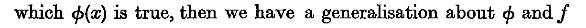
- Transcription
φ(x)- Lean
- Nphase9b/PFun
- Anchor words
values of x for which- Remarks
- 既存 #1
- Crop
- folio 222, x 125–1335, y 1766–1818 (full-size scan pixels)
ch19-003
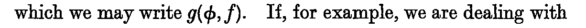
- Transcription
g(φ, f)- Lean
- Nphase9b/g
- Anchor words
which we may write- Remarks
- 既存 #2
- Crop
- folio 222, x 125–1335, y 1817–1867 (full-size scan pixels)
ch19-004
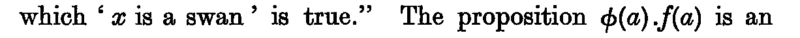
- Transcription
φ(a) . f(a)- Lean
- 未
- Anchor words
is true." The proposition- Remarks
- 既存 #3。一般化の事例 (instance)
- Crop
- folio 222, x 125–1335, y 1965–2017 (full-size scan pixels)
ch19-005
- Transcription
g(φ, f)- Lean
- Nphase9b/g
- Reprint of
- ch19-003
- Anchor words
instance of the generalisation- Remarks
- 既存 #3
- Crop
- folio 222, x 125–1335, y 2016–2067 (full-size scan pixels)
ch19-006
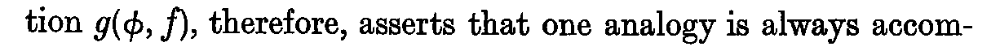
- Transcription
g(φ, f)- Lean
- Nphase9b/g
- Reprint of
- ch19-003
- Anchor words
Every generalisation- Remarks
- 既存 #4 の文脈
- Crop
- folio 223, x 125–1335, y 477–529 (full-size scan pixels)
ch19-007
- Transcription
A_{a₁…aₙ}(φ).- Lean
- Nphase9b/A
- Anchor words
let us write this—- Remarks
- 既存 #7。右肩に脚注番号 1
- Crop
- folio 223, x 125–1335, y 1987–2087 (full-size scan pixels)
ch19-008
- Transcription
A_{a₁…aₙ}(φ) ≡ φ(a₁) . φ(a₂) . . . φ(aₙ) ≡ Π_{x=a₁}^{x=aₙ} φ(x).- Lean
- ✓phase9b/A (def 本体; n = 3 の rfl は phase9b/A_three)
- Anchor words
Hence- Remarks
- 既存 #8。1 行に ≡ が 2 個 (印刷 1 行なので 1 本)。Π の上に
x=aₙ、下にx=a₁。補則 8: 印刷の定義行が def A の本体 (事例の連言 φ(a₁) . φ(a₂) . . . φ(aₙ); 省略点は List の再帰) にそのまま現れるので ✓ (細則 6)。記法 ch19-007 の対応は別勘定 - Crop
- folio 223, x 125–1335, y 2125–2230 (full-size scan pixels)
ch19-009
- Transcription
Ā_{a₁…aₙ}(φ′).- Lean
- Nphase9b/Abar
- Anchor words
let us write this—- Remarks
- 既存 #9。右肩に脚注番号 1
- Crop
- folio 224, x 125–1335, y 280–364 (full-size scan pixels)
ch19-010
- Transcription
A_{a₁…aₙ}(φ)- Lean
- Nphase9b/A
- Reprint of
- ch19-007
- Anchor words
Thus/expresses the fact that- Remarks
- 既存 #9 の文脈。行内でも A の直下に添字
- Crop
- folio 224, x 125–1335, y 364–441 (full-size scan pixels)
ch19-011
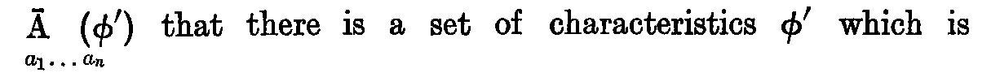
- Transcription
Ā_{a₁…aₙ}(φ′)- Lean
- Nphase9b/Abar
- Reprint of
- ch19-009
- Anchor words
common to all the instances, and- Remarks
- 既存 #9 の文脈
- Crop
- folio 224, x 125–1335, y 488–567 (full-size scan pixels)
ch19-012
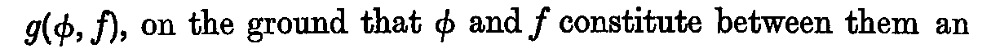
- Transcription
g(φ, f)- Lean
- Nphase9b/g
- Reprint of
- ch19-003
- Anchor words
establish the generalisation- Remarks
- 既存 #11
- Crop
- folio 224, x 125–1335, y 1117–1169 (full-size scan pixels)
ch19-013
- Transcription
g(φ, f)- Lean
- Nphase9b/g
- Reprint of
- ch19-003
- Anchor words
scope of the generalisation- Remarks
- 既存 #12
- Crop
- folio 224, x 125–1335, y 1765–1817 (full-size scan pixels)
ch19-014
- Transcription
Ā_{a₁…aₙ}(φ′) ≡ Σ_{x=a_r}^{x=a_s} φ′(x) . Σ_{x=a_r′}^{x=a_s′} \overline{φ′(x)}.- Lean
- ✓phase9b/Abar (def 本体; 範囲 [a₁, a₂], [a₂, a₃] の rfl は phase9b/Abar_example)
- Anchor words
Hence- Remarks
- 既存 #10。第 2 の Σ の被加項
φ′(x)全体に上バー。補則 8: def Abar の本体iand (Sig rs φ') (Sig rs' (¬ₚ φ'))が印刷の右辺そのもの (Σ は phase9b/Sig) なので ✓。記法 ch19-009 の対応は別勘定 - Crop
- folio 224, x 125–1335, y 2119–2224 (full-size scan pixels)
ch19-015
- Transcription
φ( ≡ φ₁φ₂)- Lean
- 未(略記の約定; 置換で吸収)
- Anchor words
The condition- Remarks
- 既存 #13。phase9b/th_19_18_src は φ を φ₁ ∧ₚ φ₂ に展開して述べ、約定そのものは定理文に現れない。有限モデルでは phase9b/Erratum19_17Countermodel.φB (Bool 版 pand) として置かれる
- Crop
- folio 225, x 125–1335, y 184–261 (full-size scan pixels)
ch19-016
- Transcription
g(φ₁, φ₂)/h ≠ 1- Lean
- 未(有限モデルの値だけ)
- Anchor words
being independent of φ₁, if- Remarks
- 既存 #13。≠ は
=に斜線の活字。この前提が現れるのは有限モデル内の定理 phase9b/Erratum19_17Countermodel.hypotheses_of_17_hold, phase9b/StrictnessCountermodel.independence_premises_hold だけで、th_19_16_src・th_19_17・th_19_18_src はこれを仮定に取らない (前提なしで成立)。補則 8 の既知の裁定 ch06-020 (有限モデルの証人だけ = 未) と同じ扱い - Crop
- folio 225, x 125–1335, y 361–413 (full-size scan pixels)
ch19-017
- Transcription
f( ≡ f₁f₂)- Lean
- 未(略記の約定; 置換で吸収)
- Anchor words
Similarly the conclusion- Remarks
- 既存 #14。phase9b/th_19_18_src は f を f₁ ∧ₚ f₂ に展開して述べる。有限モデルでは phase9b/StrictnessCountermodel.fB
- Crop
- folio 225, x 125–1335, y 463–513 (full-size scan pixels)
ch19-018
- Transcription
g(f₁, f₂)/h ≠ 1- Lean
- 未(有限モデルの値だけ)
- Anchor words
relative to h, i.e. if- Remarks
- 既存 #14。現れるのは有限モデル内の定理 hypotheses_of_17_hold, independence_premises_hold だけ (ch19-016 と同じ扱い)
- Crop
- folio 225, x 125–1335, y 563–614 (full-size scan pixels)
ch19-019
- Transcription
φ ≡ φ₁φ₂- Lean
- 未(略記の約定; 置換で吸収)
- Anchor words
If/and f ≡ f₁f₂, where- Remarks
- 既存 #15。phase9b/th_19_18_src は φ を φ₁ ∧ₚ φ₂ に展開して述べる
- Crop
- folio 225, x 125–1335, y 613–664 (full-size scan pixels)
ch19-020
- Transcription
f ≡ f₁f₂- Lean
- 未(略記の約定; 置換で吸収)
- Anchor words
, where φ₁ and φ₂ are independent- Remarks
- 既存 #15。phase9b/th_19_18_src は f を f₁ ∧ₚ f₂ に展開して述べる
- Crop
- folio 225, x 125–1335, y 613–664 (full-size scan pixels)
ch19-021
- Transcription
g(φ₁, f)/h = g(φ₁φ₂, f) . g(φ₁φ̄₂, f)/h- Lean
- ✓phase9b/th_19_16_src (第 1 連言肢)
- Anchor words
we have—- Remarks
- 既存 #16 第 1 行。右辺の
.は連言の点で、/hは連言g(φ₁φ₂, f) . g(φ₁φ̄₂, f)全体の確率 (th_19_16_src もPrI (iand … …) hと読む)。第 2 ブロック (ch19-024) のg(…)/h . g(…)/hは確率の積で別の形。第 1 回に挙げた「右辺第 1 因子に /h なし (T 候補)」は読み違いにつき取り下げ - Crop
- folio 225, x 125–1335, y 716–773 (full-size scan pixels)
ch19-022
- Transcription
≤ g(φ, f)/h,- Lean
- ≈phase9b/th_19_16_src (第 2 連言肢; 略記 φ ≡ φ₁φ₂ の代入)
- Anchor words
we have—(ブロック 2 行目)- Remarks
- 既存 #16 第 2 行。≤ は
<の下に横線の活字。定理文は φ を φ₁ ∧ₚ φ₂ と展開して書く。Keynes の略記の代入は補則 8 の「定義の代入」に当たるので ≈ (細則 6、司令塔裁定 2026-10-25; 第 3 回は ✓) - Crop
- folio 225, x 125–1335, y 772–823 (full-size scan pixels)
ch19-023
- Transcription
g(φ, f)/h = g(φ, f₁f₂)/h- Lean
- 未(略記 f ≡ f₁f₂ による書換え; 置換で吸収)
- Anchor words
and- Remarks
- 既存 #17 第 1 行。phase9b/pr_g_concl_split は g(φ, f₁f₂)/h = (g(φf₁, f₂) . g(φ, f₁))/h を述べ、この行の等号 (約定による書換え) は定理文に現れない
- Crop
- folio 225, x 125–1335, y 822–875 (full-size scan pixels)
ch19-024
- Transcription
= g(φf₁, f₂)/h . g(φ, f₁)/h- Lean
- ✎phase9b/th_19_17 (第 1 連言肢); 反駁 phase9b/Erratum19_17Countermodel.printed_form_fails
- Anchor words
and(ブロック 2 行目)- Remarks
- 既存 #17 第 2 行。第 1 因子の条件に g(φ,f₁) が欠ける (索引 #17 F)。修正形 g(φf₁,f₂)/g(φ,f₁)h . g(φ,f₁)/h が th_19_17 第 1 連言肢。印刷形が成り立つ条件は phase9b/th_19_17_src_iff。
g(φ, .f₁)の,の後に小さな点状の汚れ (原寸で確認、活字ではない) - Crop
- folio 225, x 125–1335, y 874–925 (full-size scan pixels)
ch19-025
- Transcription
≤ g(φ, f₁)/h,- Lean
- ✎phase9b/th_19_17 (第 2 連言肢); 反駁 phase9b/Erratum19_17Countermodel.printed_form_fails
- Anchor words
and(ブロック 3 行目)- Remarks
- 既存 #17 第 3 行。補則 8 の既知の裁定 (ch19-025 = ✎)。この行の左項は誤った第 2 行 (ch19-024) の右辺で、th_19_17 第 2 連言肢は左項を修正形に替えて述べる。有限モデルでは不等式そのものは成立 (phase9b/Erratum19_17Countermodel.inequality_holds)
- Crop
- folio 225, x 125–1335, y 924–974 (full-size scan pixels)
ch19-026
- Transcription
g(φ, f₁)/h ≥ g(φ, f)/h ≥ g(φ₁, f)/h.- Lean
- ≈phase9b/th_19_18_src (略記 φ ≡ φ₁φ₂, f ≡ f₁f₂ の代入)
- Anchor words
so that- Remarks
- 既存 #18 (索引 #18 E)。散文は狭義 (increases/diminish) だが印刷は ≥。定理文は φ, f を φ₁ ∧ₚ φ₂, f₁ ∧ₚ f₂ と展開し (Keynes の略記の代入 = 補則 8 の「定義の代入」なので ≈: 細則 6、司令塔裁定 2026-10-25; 第 3 回は ✓)、≥ の連鎖 2 個を連言 2 個に分けて書く。狭義の反例は phase9b/StrictnessCountermodel.chain_is_equality
- Crop
- folio 225, x 125–1335, y 973–1028 (full-size scan pixels)
ch19-027
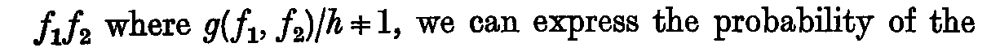
- Transcription
f₁f₂- Lean
- Nphase9b/pand
- Anchor words
resolvable into the form- Remarks
- 既存 #20
- Crop
- folio 225, x 125–1335, y 1632–1684 (full-size scan pixels)
ch19-028
- Transcription
g(f₁, f₂)/h ≠ 1- Lean
- 未(有限モデルの値だけ)
- Reprint of
- ch19-018
- Anchor words
where/, we can express- Remarks
- 既存 #20。ch19-018 の再掲。現れるのは有限モデル内の定理 hypotheses_of_17_hold, independence_premises_hold だけ (ch19-016 と同じ扱い)
- Crop
- folio 225, x 125–1335, y 1632–1684 (full-size scan pixels)
ch19-029
- Transcription
g(φ, f)- Lean
- Nphase9b/g
- Reprint of
- ch19-003
- Anchor words
probability of the generalisation- Remarks
- 既存 #20
- Crop
- folio 225, x 125–1335, y 1683–1734 (full-size scan pixels)
ch19-030
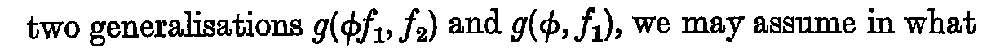
- Transcription
g(φf₁, f₂)- Lean
- Nphase9b/g, phase9b/pand
- Anchor words
the two generalisations- Remarks
- 既存 #20
- Crop
- folio 225, x 125–1335, y 1733–1784 (full-size scan pixels)
ch19-031
- Transcription
g(φ, f₁)- Lean
- Nphase9b/g
- Anchor words
and/, we may assume- Remarks
- 既存 #20
- Crop
- folio 225, x 125–1335, y 1733–1784 (full-size scan pixels)
ch19-032
- Transcription
ψ(a)- Lean
- 未
- Anchor words
If/is a proposition and- Remarks
- 既存 #21
- Crop
- folio 225, x 125–1335, y 2137–2181 (full-size scan pixels)
ch19-033
- Transcription
ψ(a) = h . θ(a)- Lean
- 未(対応なし: 脚注の一般化記法)
- Anchor words
is a proposition and- Remarks
- 既存 #21。「a についての言明」の関係は phase9b で形式化の境界に記録
- Crop
- folio 225, x 125–1335, y 2137–2181 (full-size scan pixels)
ch19-034
- Transcription
θ(a)- Lean
- 未
- Anchor words
then we must regard- Remarks
- 既存 #21
- Crop
- folio 225, x 125–1335, y 2180–2228 (full-size scan pixels)
ch19-035
- Transcription
ψ(a)- Lean
- 未
- Reprint of
- ch19-032
- Anchor words
, not/as the statement about a.- Remarks
- 既存 #21
- Crop
- folio 225, x 125–1335, y 2180–2228 (full-size scan pixels)
ch19-036
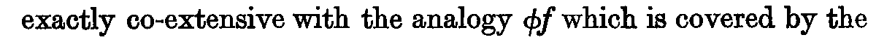
- Transcription
φf- Lean
- Nphase9b/pand
- Anchor words
co-extensive with the analogy- Remarks
- 既存 #22
- Crop
- folio 226, x 125–1335, y 469–522 (full-size scan pixels)
ch19-037
- Transcription
g(φ, f) / A_{a₁…aₙ}(φφ₁f).- Lean
- Nphase9b/p_sec6
- Anchor words
can be written—- Remarks
- 既存 #26。斜線は大きな分数線
- Crop
- folio 227, x 125–1335, y 872–987 (full-size scan pixels)
ch19-038
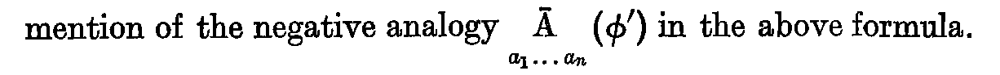
- Transcription
Ā_{a₁…aₙ}(φ′)- Lean
- Nphase9b/Abar
- Reprint of
- ch19-009
- Anchor words
mention of the negative analogy- Remarks
- 既存 #27
- Crop
- folio 227, x 125–1335, y 1554–1634 (full-size scan pixels)
ch19-039
- Transcription
φφ₁f- Lean
- Nphase9b/pand
- Anchor words
which are not included in- Remarks
- 既存 #27
- Crop
- folio 227, x 125–1335, y 1682–1733 (full-size scan pixels)
ch19-040
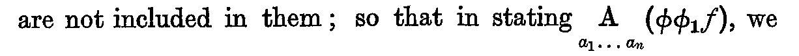
- Transcription
A_{a₁…aₙ}(φφ₁f)- Lean
- Nphase9b/A
- Anchor words
so that in stating- Remarks
- 既存 #27
- Crop
- folio 227, x 125–1335, y 1734–1807 (full-size scan pixels)
ch19-041
- Transcription
Ā_{a₁…aₙ}(φ′)- Lean
- Nphase9b/Abar
- Reprint of
- ch19-009
- Anchor words
state by implication/also.- Remarks
- 既存 #27
- Crop
- folio 227, x 125–1335, y 1808–1886 (full-size scan pixels)
ch19-042
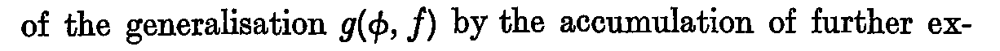
- Transcription
g(φ, f)- Lean
- Nphase9b/g
- Reprint of
- ch19-003
- Anchor words
of the generalisation/by the accumulation- Remarks
- 既存 #28 の文脈
- Crop
- folio 227, x 125–1335, y 1934–1986 (full-size scan pixels)
ch19-043
- Transcription
φ₁φ′- Lean
- Nphase9b/pand
- Anchor words
analogy φ′, since/comprise between them- Remarks
- 既存 #28
- Crop
- folio 228, x 125–1335, y 364–417 (full-size scan pixels)
ch19-044
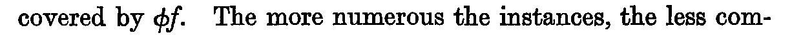
- Transcription
φf- Lean
- Nphase9b/pand
- Reprint of
- ch19-036
- Anchor words
whatever is not covered by- Remarks
- 既存 #28
- Crop
- folio 228, x 125–1335, y 416–467 (full-size scan pixels)
ch19-045
- Transcription
g(φ, f) / A_{a₁…aₙ}(φφ₁f) Ā_{a₁…aₙ}(φ′),- Lean
- Nphase9b/p_sec7
- Anchor words
written—- Remarks
- 既存 #29
- Crop
- folio 228, x 125–1335, y 1362–1459 (full-size scan pixels)
ch19-046
- Transcription
φφ₁f- Lean
- Nphase9b/pand
- Reprint of
- ch19-039
- Anchor words
where/stands for the characteristics- Remarks
- 既存 #29
- Crop
- folio 228, x 125–1335, y 1458–1512 (full-size scan pixels)
ch19-047
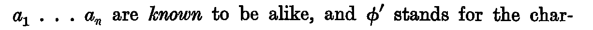
- Transcription
a₁ . . . aₙ- Lean
- Nphase9b/A (引数 l : List Inst)
- Anchor words
in which all n instances/are known to be alike- Remarks
- 既存 #29
- Crop
- folio 228, x 125–1335, y 1511–1563 (full-size scan pixels)
ch19-048
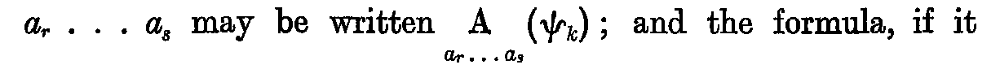
- Transcription
a_r . . . a_s- Lean
- Nphase9b/PiA (各項の引数 List Inst)
- Anchor words
kind between the instances/may be written- Remarks
- 既存 #31
- Crop
- folio 229, x 125–1335, y 923–1000 (full-size scan pixels)
ch19-049
- Transcription
A_{a_r…a_s}(ψ_k)- Lean
- Nphase9b/A, phase9b/PiA
- Anchor words
may be written/; and the formula- Remarks
- 既存 #31
- Crop
- folio 229, x 125–1335, y 923–1000 (full-size scan pixels)
ch19-050
- Transcription
g(φ, f) / A_{a₁…aₙ}(φφ₁f) Ā_{a₁…aₙ}(φ′) Π{ A_{a_r…a_s}(ψ_k) },- Lean
- Nphase9b/p_sec8, phase9b/PiA
- Anchor words
fore, to be written—- Remarks
- 既存 #32
- Crop
- folio 229, x 125–1335, y 1109–1229 (full-size scan pixels)
ch19-051
- Transcription
Π{ A_{a_r…a_s}(ψ_k) }- Lean
- Nphase9b/PiA
- Anchor words
where the terms of/stand for the various sub-- Remarks
- 既存 #32。行内でも波括弧 2 行分の高さ
- Crop
- folio 229, x 125–1335, y 1228–1343 (full-size scan pixels)
ch19-052
- Transcription
φφ₁f- Lean
- Nphase9b/pand
- Reprint of
- ch19-039
- Anchor words
which are not included in/or in φ′.- Remarks
- 既存 #32
- Crop
- folio 229, x 125–1335, y 1410–1462 (full-size scan pixels)
ch19-053
- Transcription
_bφand_bf- Lean
- Rphase9b/ev_partial (引数 bφ, bf)
- Anchor words
Suppose that/are part of φ and f- Remarks
- 補則 1 の裸記号 — 参考行 (第 1 回は行内・記法として数えていた; 数えない)。既存 #33。左下添字 b
- Crop
- folio 229, x 125–1335, y 1810–1864 (full-size scan pixels)
ch19-054
- Transcription
b₁ . . . b_m- Lean
- Nphase9b/ev_partial (引数 lb)
- Anchor words
a set of instances/which show the following- Remarks
- 既存 #33
- Crop
- folio 229, x 125–1335, y 1863–1916 (full-size scan pixels)
ch19-055
- Transcription
A_{b₁…b_m}(_bφ _bφ₁ _bf) Ā_{b₁…b_m}(_bφ′) Π{ A_{b_r…b_s}(_bψ_k) },- Lean
- Nphase9b/ev_partial
- Anchor words
show the following analogies :- Remarks
- 既存 #34。印刷は
(bφbφ1bf)と各 b が左下添字、φ₁の添字 1 の直後に b - Crop
- folio 229, x 125–1335, y 1980–2103 (full-size scan pixels)
ch19-056
- Transcription
_bφ₁- Lean
- Rphase9b/ev_partial (引数 bφ₁)
- Anchor words
where/is the analogy not covered- Remarks
- 補則 1 の裸記号 — 参考行 (第 1 回は行内・記法として数えていた; 数えない)。既存 #34
- Crop
- folio 229, x 125–1335, y 2102–2178 (full-size scan pixels)
ch19-057
- Transcription
g(φ, f) / Π_{a,b…}{ A_{a₁…aₙ}(_aφ _aφ₁ _af) Ā_{a₁…aₙ}(_aφ¹) } Π{ A_{a_r b_s…}(ψ_k) }.- Lean
- Nphase9b/p_sec9, phase9b/PiSets, phase9b/InstSet
- Anchor words
is now as follows :- Remarks
- 既存 #35。負の類推の項は上付き
¹で組まれている (他頁はφ′; 索引 T、原寸 3 倍で確認)。第 2 の Π の添字はa_r b_s . . . - Crop
- folio 230, x 125–1335, y 270–393 (full-size scan pixels)
ch19-058
- Transcription
_aφ, _af- Lean
- Rphase9b/InstSet.φa, phase9b/InstSet.fa
- Anchor words
In this expression/are the whole or part of φ, f- Remarks
- 補則 1 の裸記号 — 参考行 (第 1 回は行内・記法として数えていた; 数えない)。既存 #35
- Crop
- folio 230, x 125–1335, y 392–462 (full-size scan pixels)
ch19-059
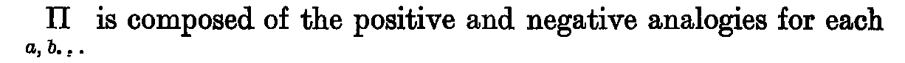
- Transcription
Π_{a,b…}- Lean
- Rphase9b/PiSets
- Anchor words
the product/is composed of the positive- Remarks
- 補則 1 の裸記号 — 参考行 (第 1 回は行内・記法として数えていた; 数えない)。既存 #35。行内で Π の直下に
a, b, . .。総乗の記号 Π に添字 a, b, . . を付けただけの 1 記号 - Crop
- folio 230, x 125–1335, y 461–538 (full-size scan pixels)
ch19-060
- Transcription
a₁ . . . aₙ, b₁ . . . b_m- Lean
- Nphase9b/InstSet.l
- Anchor words
of the sets of instances/, etc. ; and the- Remarks
- 既存 #35
- Crop
- folio 230, x 125–1335, y 537–587 (full-size scan pixels)
ch19-061
- Transcription
a₁ . . . aₙ, b₁ . . . b_m- Lean
- Nphase9b/InstSet.l
- Reprint of
- ch19-060
- Anchor words
classes of all the instances/, etc., regarded as- Remarks
- 既存 #35
- Crop
- folio 230, x 125–1335, y 636–688 (full-size scan pixels)
ch19-062
- Transcription
A_{a₁′…a′_{n′}}(_{a′}φ _{a′}f̄),- Lean
- Nphase9b/ev_negative
- Anchor words
take account, therefore, of analogies- Remarks
- 既存 #38。添字は
a₁′ . . . a′_{n′}、f の上にバー - Crop
- folio 230, x 125–1335, y 1355–1474 (full-size scan pixels)
ch19-063
- Transcription
_{a′}φ- Lean
- Rphase9b/ev_negative (引数 φa′)
- Anchor words
where/, part of φ, is true of all the set- Remarks
- 補則 1 の裸記号 — 参考行 (第 1 回は行内・記法として数えていた; 数えない)。既存 #38
- Crop
- folio 230, x 125–1335, y 1473–1541 (full-size scan pixels)
ch19-064
- Transcription
_{a′}f- Lean
- Rphase9b/ev_negative (引数 fa′)
- Anchor words
and/, part of f, is false of all the set- Remarks
- 補則 1 の裸記号 — 参考行 (第 1 回は行内・記法として数えていた; 数えない)。既存 #38
- Crop
- folio 230, x 125–1335, y 1473–1541 (full-size scan pixels)
ch19-065
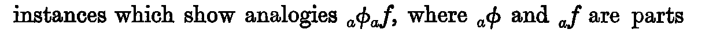
- Transcription
_aφ_af- Lean
- 未(phase9b 形式化の境界 §10)
- Anchor words
which show analogies/, where- Remarks
- 既存 #39
- Crop
- folio 230, x 125–1335, y 1840–1899 (full-size scan pixels)
ch19-066
- Transcription
_aφand_af- Lean
- R未
- Reprint of
- ch19-058
- Anchor words
where/are parts of φ and f- Remarks
- 補則 1 の裸記号 — 参考行 (第 1 回は行内・記法として数えていた; 数えない)。既存 #39
- Crop
- folio 230, x 125–1335, y 1840–1899 (full-size scan pixels)
ch19-067
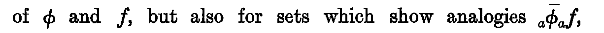
- Transcription
_aφ̄_af,- Lean
- 未(phase9b 形式化の境界 §10)
- Anchor words
sets which show analogies- Remarks
- 既存 #39。頁末。φ の上にバー
- Crop
- folio 230, x 125–1335, y 1898–1975 (full-size scan pixels)
ch19-068
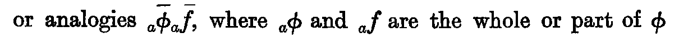
- Transcription
_aφ̄_af̄- Lean
- 未(phase9b 形式化の境界 §10)
- Anchor words
or analogies/, where- Remarks
- 既存 #39。φ, f の両方に上バー
- Crop
- folio 231, x 125–1335, y 173–263 (full-size scan pixels)
ch19-069
- Transcription
_aφand_af- Lean
- R未
- Reprint of
- ch19-058
- Anchor words
where/are the whole or part of φ- Remarks
- 補則 1 の裸記号 — 参考行 (第 1 回は行内・記法として数えていた; 数えない)。既存 #39
- Crop
- folio 231, x 125–1335, y 173–263 (full-size scan pixels)
ch19-070
- Transcription
φ̄ f̄- Lean
- R未
- Anchor words
and/are the contradictories of φ and f.- Remarks
- 補則 1 の裸記号 — 参考行 (第 1 回は行内・記法として数えていた; 数えない)。既存 #39。右肩に脚注番号 1。φ̄ と f̄ の間に空白があり、複数形 are で受ける 2 記号の並び
- Crop
- folio 231, x 125–1335, y 262–324 (full-size scan pixels)
ch19-071
- Transcription
g(φ, f) / A_{a₁…aₙ}(φφ₁f) Ā_{a₁…aₙ}(φ′) Π{ A_{a_r…a_s}(ψ_k) },- Lean
- Nphase9b/p_sec8
- Reprint of
- ch19-050
- Anchor words
generality, namely—- Remarks
- 既存 #42。229 の式の再掲 (第三段階の一般性)
- Crop
- folio 231, x 125–1335, y 942–1062 (full-size scan pixels)
ch19-072
- Transcription
φφ₁fφ′- Lean
- 未
- Anchor words
recognised in that/are not between them- Remarks
- 既存 #42
- Crop
- folio 231, x 125–1335, y 1425–1479 (full-size scan pixels)
ch19-073
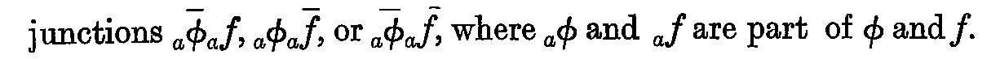
- Transcription
_aφ̄_af, _aφ_af̄, or _aφ̄_af̄- Lean
- 未(phase9b 形式化の境界 §11)
- Reprint of
- ch19-067, ch19-068
- Anchor words
junctions/, where- Remarks
- 既存 #43
- Crop
- folio 231, x 125–1335, y 1629–1693 (full-size scan pixels)
ch19-074
- Transcription
_aφand_af- Lean
- R未
- Reprint of
- ch19-058
- Anchor words
where/are part of φ and f.- Remarks
- 補則 1 の裸記号 — 参考行 (第 1 回は行内・記法として数えていた; 数えない)。既存 #43
- Crop
- folio 231, x 125–1335, y 1629–1693 (full-size scan pixels)
ch19-075
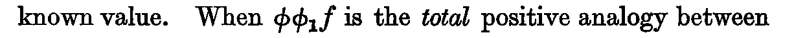
- Transcription
φφ₁f- Lean
- Nphase9b/pand
- Reprint of
- ch19-039
- Anchor words
known value. When/is the total positive analogy- Remarks
- 既存 #46
- Crop
- folio 232, x 125–1335, y 854–906 (full-size scan pixels)